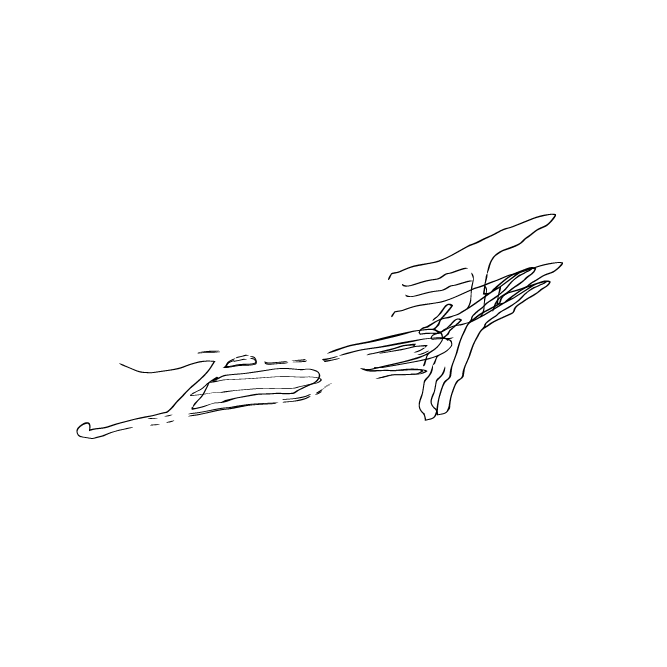

B77 es un proyecto contemporáneo concebido como un archivo material.
A través de un sistema de registros y fragmentos, busca ver la joya como objeto conceptual,
más allá de su función estética.
El trabajo se despliega entre joyería, objeto e imagen, con la naturaleza como matriz sensible y conceptual.
ARCHIVO 1 — RESTOS constituye el primer registro del proyecto, explorando la noción de resto como aquello que sobrevive, persiste y deja huella.